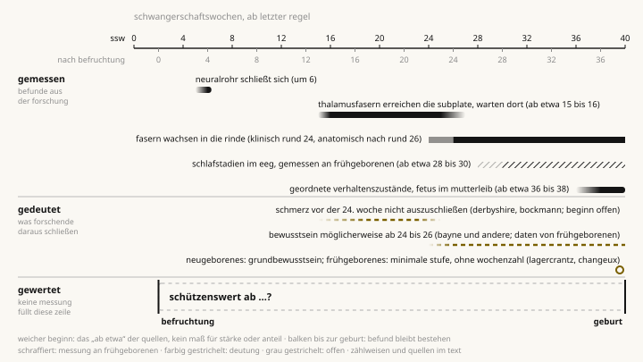
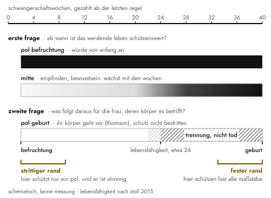
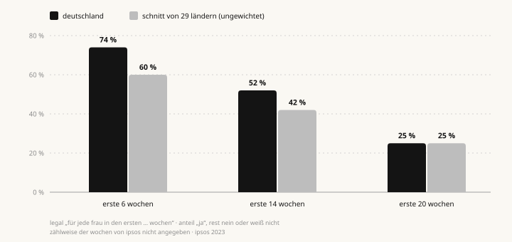
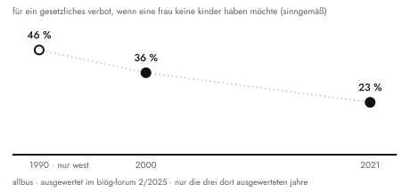
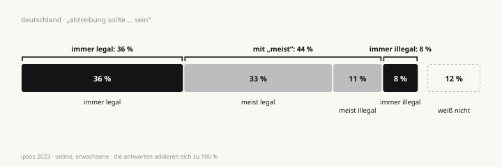

Ab wann verdient werdendes Leben Schutz, und was heißt das für die Frau, die es trägt? Jede Antwort darauf ist eine Abwägung von Werten. Gleiche Werte, verschiedene Gewichtung = unterschiedliche Sichtweisen. In ihrer konsequenten Form bestehen beide Seiten eine Prüfung. Geben wir zu, dass beide Sichtweisen tragen, verlieren wir den Grund, unser Gegenüber zu verurteilen. Der Verlust ist gleichzeitig ein Gewinn! Ein Gewinn an Offenheit und an der Bereitschaft, einander zuzuhören. Eine verurteilungsfreie Toleranz: „We agree to disagree“. Und wir reden weiter. Danke!
Dafür oder dagegen? Eine Frage, zwei Antworten, eine subjektive Gewissheit. Ich habe keine. Ich bin weder dafür noch dagegen. Dafür zu sein: Ich verrate das werdende Leben. Dagegen zu sein: Ich verrate die Frau, die schon da ist. Sag ich’s laut: Blicke erntend irgendwo zwischen Mitleid und Verdacht. Feigling? Noch schlimmer, Relativist?
Bevor ich anfange, etwas, das mir am Herzen liegt: Ich versuche es im Folgenden mit einer logischen Annäherung, Wissenschaft dazu, mit Fußnoten belegt. Ein Thema. Aber für viele, die selbst in der Situation waren: zentrale Lebensgeschichte, ein Leben lang. Punkt!! Für mich nicht: Ich habe diese Entscheidung nie treffen müssen. Wer so bequem sitzt wie ich, versteht leicht beide Seiten und tendenziell weniger das Leid auf der einen oder anderen; dessen bin ich mir bewusst. Ich kann (und will) versuchen, mich hineinzufühlen. Dabei sollen die Gefühle, die beim Lesen hochkommen (können), kein Störgeräusch sein: Sie verdeutlichen, was dir wichtig ist. Genau darum geht es hier. Deine Erfahrungen, die so viel in dir auslösen. Meine Bitte: Halte inne, versuche einzuordnen, und lies bis zum Schluss. Inhaltlich zerreißen kannst und darfst du es danach.
Was ich in diesem Text ausklammere: Vergewaltigung, Gefahr für Leben oder Gesundheit der Frau, ein schwerer Befund beim Kind. Das sind die schwersten Lagen in dieser Frage, voller Verwundbarkeit. In der Statistik stehen sie für rund 4 Prozent der Abbrüche,1 im Leben jedes Mal für einen Menschen, der sich das nicht ausgesucht hat. Weniger wichtig sind diese Lagen deshalb nicht. Mir geht es zunächst um eine grundsätzliche Sicht. Dass die Debatte meist bei diesen Fällen anfängt, verstehe ich: Dort tut es am meisten weh. Nur kann ich dort den Diskurs so eng führen, dass ich als Gewinner rausgehe, egal auf welcher Seite ich stehe. Gewinner erzeugen Verlierer, damit ist der Debatte nicht geholfen, und es verhärtet beide Seiten. Aber wenigstens ist dann mein eigenes Ego gehegt und gepflegt. Zoomen wir uns erst einmal raus, bevor wir uns reinzoomen. Deswegen einmal die übergeordnete Frage: Ab wann verdient werdendes Leben Schutz? Die steckt auch in den Sonderfällen, nur wiegt dort noch anderes mit. Also prüfe ich sie am Abbruch im Allgemeinen, ohne Blick auf die einzelne Entscheidung und Lage. Das geht nur von außen, und das ist die bewusste Grenze dieses Textes und dessen, was ich selbst leisten kann.
Viele Menschen tragen schwer an dieser Entscheidung, in welche Richtung sie auch gefallen ist oder fallen mag. Was wäre wenn? Was hätte sein können? Ich kann das nicht ermessen und will es nicht bewerten. Ich möchte nicht so tun, als würde ich es können. Was ich versuche: diese Erfahrung achten und mein Möglichstes tun, mit diesem Text niemandem zu nahe zu treten. Das gilt auch für den Menschen, an den du beim Lesen vielleicht denkst.
Mir geht es um das moralische Urteil und darum, wie wir uns dabei gegenseitig verurteilen. Das gilt für jede Seite, wo immer jemand steht. Was das Gesetz regeln soll und wer im Einzelfall entscheidet, hängt an diesem Urteil, ist aber eine weitere Frage. Die lasse ich offen, ganz bewusst.
1die falsche frage
Ab wann ist es Leben? Streit vorprogrammiert … aber dann doch irgendwie leicht zu beantworten. Die befruchtete Eizelle lebt (kurz tief einatmen bitte) und ist menschlich. Darüber muss niemand streiten. Der Streit beginnt bei der Frage, ab wann dieses Leben Schutz verdient. Das entscheidet keine Messung. Man kann Gründe anführen (gute sogar), aber am Ende wägt man Werte gegeneinander ab. Und da fängt der ganze „Spaß“ an.
Also eigentlich zwei Fragen:
- Ab wann ist das werdende Leben schützenswert?
- Was folgt daraus, wenn auf der anderen Seite eine Frau steht, die ganz sicher schon da ist und deren Körper es betrifft?
Wer beides vermischt, redet am anderen vorbei. Bewusst oder unbewusst. Ich gehe der ersten ausführlich nach, weil sie sich als Tatsachenfrage verkleidet und deshalb zerlegt werden muss. Die zweite verkleidet sich nicht: Dass die Frau da ist, muss niemand beweisen, und was daraus folgt, misst kein EEG. Zerlegen muss ich sie nicht. Die Reihenfolge soll also keine Rangfolge sein; für mich wiegt die zweite genauso schwer, und sie kommt überall dort zurück, wo es zählt.
Für die erste Frage gibt es mehrere Maßstäbe. Jeder hat ernsthafte Vertreter. Zwei knüpfen an einen deutlich sichtbaren Einschnitt an.
Der eine ist die Befruchtung. In ihrer stärksten Form ist die Position, dass jeder Mensch dieselbe Würde hat, unabhängig davon, was er kann. Das gilt für den Säugling und für den Bewusstlosen. Der Fetus ist ein Mensch, also gilt es auch für ihn. Wer eine Fähigkeit wie Empfinden zur Bedingung macht, führt eine Zusatzbedingung ein. Diese würde er bei geborenem Leben nie hinnehmen. In diese Richtung hat 1975 auch das Bundesverfassungsgericht entschieden, als es die Fristenregelung des Bundestags mit der Schutzpflicht des Staates für menschliches Leben für unvereinbar hielt.2 Don Marquis kommt 1989 auf anderem Weg zu einem ähnlichen Ergebnis. Töten sei falsch, weil es dem Opfer eine wertvolle Zukunft nimmt, und eine solche Zukunft habe der Fetus wie wir.3
Der andere Einschnitt ist die Geburt. Die stärkste Form dieser Seite muss den Schutz gar nicht bestreiten, sie stützt sich auf die zweite Frage. Die Philosophin Judith Jarvis Thomson hat 1971 angenommen, der Fetus sei von der Empfängnis an eine Person (sie nimmt das nur an, um es durchzuspielen), und trotzdem gefolgert, dass auch ein Recht auf Leben kein Recht ist, den Körper einer anderen gegen ihren Willen zu nutzen.4 Und der Einschnitt? Vor der Geburt ist das Kind im Körper der Frau, danach nicht mehr.
Dazwischen liegt der Rest: die Maßstäbe, die an einer Fähigkeit hängen. Empfinden, Bewusstsein, Lebensfähigkeit (ob das Kind draußen überleben würde). Die ersten beiden trenne ich hier nicht; gemessen wird für beide dasselbe. Einen Einschnitt hat keiner von ihnen zu bieten. Da wächst etwas, Woche für Woche: ein Verlauf.
Und ich? Für mich wird es ernst, sobald da jemand ist, der etwas erlebt. Das ist das Bewusstsein, und es gehört in die Mitte (wie praktisch!). Dumm nur, dass mir das andere ebenso am Herzen liegt, der Schutz von etwas, das auf dem Weg dorthin ist, und die Freiheit einer Frau über ihren eigenen Körper. Der Streit verläuft bei mir nicht zwischen mir und den anderen. Er verläuft durch mich hindurch, und beide Seiten haben dort Wohnrecht. Kündigen kann ich keiner, auch nicht wegen Eigenbedarf.
2was sich messen lässt
Bewusstsein als Entscheidungsbasis ist messbar, wann es da ist…messen wir also. Die Antworten sind erstaunlich genau und tückisch. Ab der Befruchtung wird in der Neuroanatomie in Wochen gezählt. Die Geburtsmedizin zählt ab dem ersten Tag der letzten Regel. Dazwischen liegen ca. zwei Wochen.5 (Schwangerschaftswochen zähle ich fortan ab der letzten Regel).
Das Neuralrohr (aus dem Gehirn und Rückenmark werden) schließt sich am Ende der vierten Woche nach der Befruchtung. Etwa während der sechsten Schwangerschaftswoche.6 Thalamus und Hirnrinde werden in zwei Stufen verbunden. Ab etwa der 13. bis 14. Woche nach der Befruchtung erreichen Fasern aus dem Thalamus eine Übergangsschicht unter der entstehenden Rinde (Subplate). Dort warten sie wochenlang. In die Rinde selbst wachsen sie erst nach der 24. Woche nach der Befruchtung ein. Also nach rund 26 Schwangerschaftswochen.7 Klinische Übersichten nennen für diese Verbindung meist rund 24 Schwangerschaftswochen.8 Woher die zwei Wochen Unterschied kommen, sagen die Quellen nicht.
Das EEG eines Frühgeborenen zeigt ab etwa der 28. bis 30. Woche zwei Schlafzustände: aktiven und ruhigen Schlaf.9 Geordnete Verhaltenszustände, wie sie ein Neugeborenes zeigt, erreicht der Fetus im Mutterleib erst ab etwa der 36. bis 38. Woche.10 Das sind keine Meinungen. Uneins wird die Forschung bei der Deutung. Lagercrantz und Changeux sprachen 2009 dem Neugeborenen ein Grundbewusstsein zu, dem Frühgeborenen nur eine minimale Stufe, weil die Verbindung zwischen Thalamus und Rinde noch nicht fertig sei.11 Derbyshire und Bockmann hielten 2020 dagegen: Schmerz vor der 24. Woche lasse sich nicht ausschließen, weil womöglich schon die frühen Verbindungen zur Subplate genügen.12 (Schönes Detail am Rande: Die beiden sind sich bei der Abtreibung selbst nicht einig und haben die Befunde trotzdem gemeinsam bewertet. Man kann also gemeinsam rechnen und verschieden urteilen. Bitte einmal gedanklich abspeichern!)
Eine neuere Übersicht von Bayne und Kollegen hält es für wahrscheinlich, dass Bewusstsein im frühen Säuglingsalter vorhanden ist, vielleicht schon vor der Geburt (möglicherweise ab der 24. bis 26. Woche); die Autoren schreiben allerdings selbst dazu, dass sich das von Frühgeborenen nicht ohne Weiteres auf Feten im Mutterleib übertragen lässt.13

3was sich nicht messen lässt
Wir wissen viel und tasten uns voran. Die aktuelle Forschung bringt unfassbar viel Transparenz in den Prozess der embryonalen Entwicklung. Aber ein Gedanke dazu: Jede Synapse kartiert, der Beginn des Bewusstseins auf den Tag genau bestimmt. Ist die Frage dann entschieden?
Klares Nein für mich. „Ab der 24. Woche sind Thalamus und Rinde verbunden“ folgt „ab dann ist es schützenswert“ nur mit einem Zwischenschritt. Da steht die Annahme, dass Empfinden schutzbedürftig ist. Der Zwischenschritt ist nicht messbar. Wertung eben. Und darüber streiten wir. Wenn die Befruchtung der Maßstab ist, braucht es kein EEG. Geburt als Maßstab braucht es auch nicht. Biologie als Zeitpunkt, wenn ein Maßstab maßgebend ist. Aaahhja, das Maß…und das muss man mitbringen. Mehr Daten schließen Lücken, eine nach der anderen: wann die Fasern die Rinde erreichen, wann das EEG Schlaf zeigt, irgendwann auf den Tag genau. Nur diese eine nicht. Sie wird nicht kleiner, nicht um eine Stunde, denn sie liegt nicht zwischen zwei Wochen, sondern zwischen „ist“ und „soll“. Schon David Hume hat 1739 bemerkt, dass jedes Moralsystem, das ihm begegnet sei, eine Weile mit „ist“ und „ist nicht“ argumentiere und dann plötzlich bei „soll“ und „soll nicht“ ankomme, ohne zu erklären, wie das eine aus dem anderen folgt.14
Was ist Bewusstsein überhaupt? Auch darauf gibt es keine anerkannte Theorie. Bayne und Kollegen zeigen, dass die einflussreichen Theorien bei denselben Befunden zu sehr verschiedenen Antworten kommen. Einige setzen den Beginn spät an, eine früh, und bei einer ist offen, was sie vorhersagt.13 Die Autoren suchen deshalb nach Merkmalen, die von keiner Theorie abhängen. Das ist aus meiner Sicht ein vernünftiger Weg, den Zeitpunkt einzugrenzen. Am Wert ändert das allerdings nichts. Wüssten wir eines Tages, wann Bewusstsein beginnt, müssten wir immer noch entscheiden, ob es das ist, worauf es ankommt.
4was die logik kann
Wenn aber keine Tatsache entscheidet, darf dann jeder gewichten, wie er lustig ist?
Darf er nicht. Eine Prüfung bleibt: die Stimmigkeit. Wir können uns über Tatsachen irren, und wir können uns selbst widersprechen. Beides können wir einander nachweisen. Und wichtiger: Beide Seiten müssen sich dieser Prüfung stellen.
Wer die Befruchtung zum Maßstab macht, muss erklären, wie er zu den Embryonen steht, die bei der künstlichen Befruchtung entstehen und nicht mehr gebraucht werden. Gibt es die in Deutschland überhaupt? Ja, obwohl das Gesetz sie möglichst vermeiden will.15 Lehnt er auch das ab, ist er stimmig; wischt er es mit „das ist etwas anderes“ beiseite, ohne zu sagen, was anders ist, hat er zwei Maßstäbe.
Wer die Geburt zur Grenze macht, muss erklären, warum ein Frühgeborenes in der 35. Woche Schutz verdient und ein Fetus in der 39. nicht. Am Entwicklungsstand kann es nicht liegen: Der Fetus ist weiter. Bleibt der Ort, der Körper der Frau. Das ist stimmig, hat aber Folgen. Denn der Ort begründet das Recht, die Schwangerschaft zu beenden, nicht den Tod des Kindes. Thomson zieht diese Grenze selbst: Die Frau darf die Schwangerschaft beenden, auch wenn das Kind das nicht überlebt; überlebt es, hat niemand ein Recht auf seinen Tod. Und eine Abtreibung im siebten Monat, nur um eine Reise nicht verschieben zu müssen, nennt sie ausdrücklich unanständig.4
Dazu kommt der Einwand der Mitverantwortung: Wer freiwillig das Risiko einer Schwangerschaft eingeht, ist in einer anderen Lage als eine Frau, der sie aufgezwungen wurde. Thomson hält dagegen, ein eingegangenes Risiko sei noch keine Einwilligung; sie räumt aber ein, dass der Einwand in manchen Fällen trägt.4 Am stärksten ist das Körper-Argument bei der Vergewaltigung, die ich hier ausklammere; für den Abbruch ohne Sonderfall muss diese Seite den Einwand aushalten.
Beide Pole bestehen die Prüfung also, solange sie konsequent bleiben. Nur zahlt jeder woanders: der eine bei den Embryonen, der andere am Ende der Schwangerschaft. Obendrein sind die Einschnitte unschärfer, als sie aussehen. Nicht einmal die Befruchtung ist ein Augenblick; das deutsche Recht zieht seine Linie mitten in ihr, bei der Verschmelzung der Kerne von Ei und Samenzelle.15 Das Strafgesetzbuch zieht gleich noch eine zweite: Für § 218 beginnt die Schwangerschaft erst mit der Einnistung; was davor wirkt, ist kein Abbruch.15
Wer die Lebensfähigkeit zum Maßstab macht, muss erklären, warum derselbe Fetus neben einer Kinderklinik schützenswert sein soll und hundert Kilometer weiter nicht. Ob ein Kind in der 23. Woche draußen überlebt, hängt an der nächsten Klinik und am Jahrzehnt. Stimmig wird der Maßstab erst, wenn er nicht das Kind misst, sondern den Ausweg: Von da an lässt sich die Schwangerschaft beenden, ohne das Kind zu töten. Dann beantwortet auch er die zweite Frage, nicht die erste. Thomsons Grenze, nur früher.
Einer fehlt noch in der Prüfung, nämlich ich. Mal sehen, was mein gehegtes und gepflegtes Ego davon hat. Wer Bewusstsein zum Maßstab macht, muss erklären, warum jemand geschützt ist, der gerade bewusstlos ist, betäubt oder im Koma liegt. Meine Antwort: Wer Bewusstsein hatte und wieder haben wird oder haben könnte, ist anders gestellt als jemand, der es nie hatte. Das klingt gut, führt mich aber erstaunlich nah an Marquis heran. Dann zählt nicht nur, was jemand gerade erlebt, sondern auch, was er erleben wird oder erleben könnte. Damit gebe ich dem frühen Pol ein Stück recht. Und wer Bewusstsein zählt, muss sagen, was das für Tiere heißt, die zweifellos etwas erleben. Darauf habe ich keine fertige Antwort. Die Prüfung selbst gestellt, selbst benotet und trotzdem nur knapp bestanden, abgeschrieben bei der Gegenseite. So viel zum Ego. Da sitzt mein Riss.
Wer wie ich in den Graustufen steht, hat noch ein zweites Problem: keinen klaren Entscheidungspunkt. Den gibt es nicht und wird es nicht geben. Ein Prozess ist dynamisch, nirgends wird darin aus nichts plötzlich jemand. Die scharfe Linie findet er nicht, er muss sie selbst ziehen. Dafür kann er vergleichen: Später wiegt schwerer als früher. Ob der Einschnitt zählt oder der Verlauf, entscheidet jeder selbst (in einer ersten Abwägung), und keine der beiden Antworten ist ein Denkfehler.
Einer widerspricht mir hier schon (ich höre ihn beim Schreiben): Wer die Befruchtung zum Maßstab macht, wägt aus seiner Sicht gar nicht ab. Für ihn steht Würde nicht als Posten in der Rechnung, sie verbietet die Rechnung; dass ich auch das eine Gewichtung nenne, ist meine Lesart, nicht seine. Hier dreht der Streit im Leerlauf, und aufgelöst bekomme ich ihn nicht. Nachweisen kann ich ihm nichts, er mir ebenso wenig. Unentschieden, und das nicht aus Höflichkeit.
In der Debatte stehen die beiden Pole oft als Gewissheit gegen Gewissheit. Stimmig sind sie, bewiesen ist keiner. Dazwischen liegen die Graustufen. Die haben trotzdem Ränder, und sie sind ungleich. Kurz vor der Geburt halten fast alle Maßstäbe das Kind für schützenswert (selbst Thomson verlangt dann nur die Trennung, nicht den Tod): Dieser Rand ist fest. Kurz nach der Befruchtung widerspricht dagegen ein ganzer Pol, der in sich widerspruchsfrei ist: Dieser Rand bleibt strittig. Der Streit sitzt also vorne und in der Mitte. Hinten ist es vergleichsweise ruhig.

Beim Abbruch streiten zwei Seiten, die sich auf dieselben Werte berufen. Wer schützen will, beruft sich auf den Schutz des Schwächeren, und den will auch die andere Seite. Wer die Frau entscheiden lassen will, beruft sich auf Selbstbestimmung. Die will aber auch die erste Seite. Gestritten wird über die Gewichtung, angewandt auf einen Fall, für den keiner dieser Werte gemacht wurde.
Woher dann das Schwarz-Weiß der Debatte? Ich glaube, zum Teil aus einer Verwechslung. Eine Abwägung kann Stufen haben, die Handlung hat keine: abbrechen oder nicht. Wer lange mit sich ringt, kommt am Ende zum selben Ja oder Nein wie jemand, der nie gezweifelt hat. Nach außen dringt, wenn überhaupt, dieses Ja oder Nein. Was jemand selbst trägt, was Freunde und Familie dazu sagen (und die sagen oft Verschiedenes; wie die Entscheidung auch fällt, einer von ihnen hält sie für falsch): Das bleibt vermutlich im Verborgenen, auch der Urteile wegen, die draußen warten. Die Statistik sieht es ebenso wenig. Sie zählt den Weg durch die Beratung, nicht das, was jemand mitbringt; die 4 Prozent schwerster Lagen vom Anfang sind deshalb eher eine Untergrenze.1 Wie hoch die Zahl wirklich ist, weiß niemand.
Das Ja oder Nein zeigt also, wie die Waage am Ende stand. Wie lange sie geschwankt hat und was in der anderen Schale lag, zeigt es nicht. Die Entscheidung darf jeder an seinem Maßstab messen; den Menschen kennt er damit noch nicht. Die Gegenprobe: dieselbe Frau, dasselbe Ringen, das andere Ergebnis. Wer sie eben verurteilt hat, hat jetzt nichts mehr gegen sie. In der Hand hat er also ihre Gewichtung, sonst nichts, und von der gibt es auf beiden Seiten stimmige. Sein Urteil misst ihre Gewichte an seinen eigenen. Über sie sagt es wenig. Es zeigt, dass er seine eigenen Gewichte für die richtigen hält. Ob sie in einer der schwersten Lagen war, sieht dem einzelnen Ja niemand an. Ich auch nicht. Deshalb urteile ich hier über keine einzelne Entscheidung.
Bei der Sache selbst gibt es dieselbe Verwechslung. Weil am Ende ein Ja oder Nein stehen muss, braucht die Handlung eine scharfe Linie; dass die Sache eine hat, folgt daraus nicht. Eine Linie zu ziehen ist trotzdem nichts Anrüchiges. Mit 18 wird jeder volljährig, und niemand glaubt, dass die Reife am Morgen des Geburtstags eintrifft. (Der Vergleich hinkt: Die 18 ist eine Regel des Rechts, kein moralisches Urteil.)
Bleibt die Unsicherheit selbst. Kann sie den Ausschlag geben? Beide Seiten versuchen es. Die eine sagt, im Zweifel schützen. Wer nicht weiß, was sich im Gebüsch bewegt, schießt nicht. Das Argument trifft die Ungewissheit über eine Tatsache, also gerade die Maßstäbe der Mitte. Die andere Seite sagt, einem ungewissen Anspruch stehe ein gewisser gegenüber, der der Frau, und schon ist die zweite Frage wieder da. Beide Argumente sind vernünftig. Welches schwerer wiegt, ist eine persönliche Gewichtung und keine Messung. Jede Seite legt die Unsicherheit in ihre Waagschale. Den Ausschlag gibt sie nicht.
Übrig bleibt mehr als eine stimmige Position, nämlich die beiden Pole in ihrer konsequenten Form und eine Reihe von Linien dazwischen, die sich bei beiden etwas borgen. Beliebig ist das nicht, was sich widerspricht oder Tatsachen verkennt, ist ja aussortiert. Nennen wir es eine vernünftige Meinungsverschiedenheit. Zwei Menschen prüfen sauber, berufen sich auf dieselben Werte und landen dennoch bei verschiedenen Ergebnissen. Warum? Weil sie verschieden gewichten. Bei mir geschieht das sogar in einem einzigen Kopf.
Den Ausdruck „vernünftige Meinungsverschiedenheit“ verbindet man mit John Rawls. Er hat aufgezählt, warum sorgfältig urteilende Menschen bei solchen Fragen dauerhaft auseinanderliegen: Die Belege sind widersprüchlich, dieselben Gründe wiegen für verschiedene Menschen verschieden schwer, die Begriffe sind unscharf, und jeder bringt seine Lebenserfahrung mit.16 Wie leicht man das vergisst, zeigt ausgerechnet Rawls selbst: In einer Fußnote hielt er seine eigene Abwägung beim Abbruch für die einzig vernünftige und nahm das später zurück; es sei eine Meinung gewesen, kein Argument.16
So viel Grau hält niemand aus. Die Menschen müssten sich längst für Schwarz oder Weiß entschieden haben, schon der Nerven wegen.
5was die menschen sagen
Haben sie nicht, jedenfalls nicht so, wie die Debatte es nahelegt. In Deutschland sagen 12 Prozent „weiß nicht“. Das kann die Ausgewogenheit der Abwägungen bedeuten oder einfach auch reines Desinteresse. Eine der beiden absoluten Antworten wählen 44 Prozent, 36 Prozent „immer legal“ und 8 Prozent „immer illegal“. Ebenso viele, nämlich 44 Prozent, sagen „meist legal“ oder „meist illegal“.17 Was dieses „meist“ meint, verrät die Frage nicht. Es können die Sonderfälle sein, die ich eingangs ausgeklammert habe.
Aussagekräftiger ist die Frage nach dem Zeitpunkt, weil sie ausdrücklich jede Frau meint: Dass eine Abtreibung für jede Frau legal sein soll, finden in Deutschland 74 Prozent für die ersten 6 Wochen, 52 Prozent für die ersten 14 und 25 Prozent für die ersten 20.17 Das „immer legal“ von eben ist also nicht wörtlich gemeint: 36 Prozent sagen es, 25 Prozent gehen bis zur 20. Woche mit. Ob der Einzelne so staffelt oder ob nur jeder seine Linie an anderer Stelle zieht, geben die Zahlen nicht her; gegen eine einzige scharfe Linie für alle sprechen sie trotzdem.

Werte verändern sich dabei: Für ein gesetzliches Verbot, wenn eine Frau keine Kinder haben möchte, waren 1990 noch 46 Prozent, im Jahr 2000 36 Prozent und 2021 nur noch 23 Prozent.18 Das ist der Wandel einer Gesellschaft, nicht der einzelner Menschen. Festgeschraubt sind Haltungen aber offenbar nicht, wenigstens im Großen.

Zwei Einschränkungen, damit es nicht schöner aussieht, als es ist. Die Umfragen messen die Richtung einer Überzeugung, nicht ihre Stärke. Und sie fragen nach der Rechtslage, nicht nach dem moralischen Urteil. Wer „legal“ sagt, kann eine Abtreibung trotzdem für falsch halten. Auffällig ungleich sind allerdings die Enden der Skala: 36 Prozent sagen „immer legal“, 8 Prozent „immer illegal“, und 2023 wollten nur 3 Prozent Abbrüche ohne jede Ausnahme untersagen.19 Zwei gleich große Lager sehen anders aus.

Wenn die Linien so verschieden liegen, wer hat dann die zwei Lager gebaut?
6falsch beschriftet
Zum Teil die Verwechslung von vorhin. Zum größeren Teil die Politik. Wer dafür ist, gilt als progressiv, wer dagegen ist, als konservativ. Rechts gegen links, also alles wie gehabt. Die Zahlen hole ich mir aus den USA; dort hat jemand mitgeschrieben, wie die Lager entstanden. Sag mir dort dein Lager, und ich tippe deine Antwort (meistens richtig): 94 Prozent der Liberalen (bei uns hieße das: der Linken) wollen den Abbruch in allen oder den meisten Fällen legal sehen, unter Konservativen sind es 30 Prozent.20 Vorhersagen ist aber etwas anderes als begründen.
Und alt ist die Vorhersage auch nicht: Bis Ende der 1980er-Jahre waren republikanische Wähler sogar eher für ein Recht auf Abtreibung als demokratische. Auseinandergelaufen sind zuerst die Abgeordneten, ab 1979; die Wähler kamen ein Jahrzehnt später nach.21 Von oben nach unten also.
Die progressive Haltung ist hier nicht progressiver als ihr Gegenteil, und die konservative nicht konservativer.
Das stimmt, solange die erste Frage offen ist (das Etikett weiß es natürlich längst besser). Steile These, ich weiß.
Zuerst die Argumente. „Mein Körper, meine Entscheidung, der Staat hält sich heraus“: So redet sonst der Liberale alter Schule, und den suche ich eher rechts der Mitte. „Jeder Mensch hat gleiche Rechte, unabhängig vom Entwicklungsstand“: So redet sonst die Gleichheitsbewegung, und die suche ich links. Jedes Lager arbeitet mit dem Werkzeug des anderen. Und beide Werkzeuge haben ihre Grenze. „Mein Körper“ tut als Parole so, als gäbe es nur einen Körper, und überspringt damit die erste Frage. In Thomsons starker Form überspringt der Satz nichts; er beantwortet die zweite Frage und zahlt dort, am Ende der Schwangerschaft. „Gleiche Rechte“ beruft sich gern auf frühere Erweiterungen des Schutzkreises. Dort sagten aber alle Maßstäbe dasselbe: Da ist jemand. Hier fallen sie auseinander, und darum geht der ganze Streit. Beides starke Argumente. Und beide landen wieder bei den zwei Fragen, wo auch sonst.
Dann das Wort. Konservativ heißt bewahren. Nur: was? Vor der Reform von 1974 war in der Bundesrepublik das Verbot das Bewahrte. Heute ist es der Kompromiss des § 218: Der Abbruch bleibt grundsätzlich strafbar, ist nach Beratung aber kein Straftatbestand, wenn seit der Empfängnis nicht mehr als zwölf Wochen vergangen sind (etwa bis zum Ende der 14. Schwangerschaftswoche).22 Das Wort sagt: Es wird etwas bewahrt, aber eben nicht, was. Beim Wort genommen sind die Konservativen von heute die 54 Prozent, die den Paragrafen behalten wollen. Umbauen wollen ihn beide Enden, in entgegengesetzte Richtungen: 36 Prozent wollen ihn abschaffen, 3 Prozent Abbrüche ohne Ausnahme verbieten.19
Und die Zeit? Hier muss ich beiden Etiketten etwas lassen. Rückwärts geschaut hat das konservative die Richtung für sich: Kirche und Recht waren über Jahrhunderte gegen den Abbruch. Nur dachten sie dabei in Stufen. Augustinus ließ offen, ob der noch ungeformte Fetus eine Seele hat; ob es überhaupt in der Macht des Menschen liege, die Frage zu lösen, wisse er nicht.23 (Er meint die Seele, ich meine den Maßstab; rund 1600 Jahre später stehe ich an derselben Stelle.) Thomas von Aquin ließ die Seele mit Aristoteles erst später hinzukommen: nach 40 Tagen bei männlichen, nach 90 bei weiblichen Feten.24
Das Recht stufte genauso. Die Peinliche Gerichtsordnung Karls V. bestrafte 1532 die Abtreibung eines „lebendig kindt“ mit dem Tod; war das Kind „noch nit lebendig“, sollten die Richter erst bei Rechtsgelehrten Rat einholen.25 Unrecht sahen Kirche und Recht auch im frühen Abbruch, nur das geringere. Die eine Strafe für alles kam in der katholischen Kirche erst 1869: Pius IX. dehnte die Exkommunikation auf jede direkte Abtreibung aus.26 Die Richtung ist also alt, die Form ohne Stufen jung.
Vorwärts geschaut hat das progressive Etikett die Richtung für sich: Die Einstellungen werden liberaler, das zeigen die Zahlen von 1990 bis 2021. Es gibt aber einen zweiten Fortschritt, den der Medizin. Von den Kindern, die in der 24. Woche zur Welt kamen, überlebten 1993 52 Prozent, 2012 waren es 65 (so eine große amerikanische Studie).27 Für den Maßstab der Lebensfähigkeit verschiebt das die Gewichte nach vorn. Progressiv und fortschrittlich zeigen hier in verschiedene Richtungen. Jedes der beiden Etiketten hat damit die Richtung für sich. Eine Begründung ist das nicht: Dass etwas alt ist oder neu, beweist nichts.
Das Lager liefert die Tendenz. Die Begründung muss jeder selbst mitbringen. Wer sein Urteil im Lager abholt, hat es nicht geprüft. Wer geprüft hat, darf dort wohnen bleiben, aber dann freiwillig.
7was daraus folgt
Jetzt folgt eine Kette, alles schön in Serie. Ein Prozess eben.
Ab wann werdendes Leben schützenswert ist, folgt nicht aus Tatsachen. Wäre diese Frage entschieden, bliebe die zweite: der Anspruch der Frau. Auch dort wiegen wir, statt zu messen (Thomsons eigene Grenze und die Mitverantwortung haben es gezeigt). Beweisen kann seine Gewichtung keiner. Was kann die Logik? Aussortieren, was sich widerspricht oder Tatsachen verkennt. Beim Abbruch bleibt mehr als eine stimmige Position, weil die Maßstäbe hier auseinanderfallen. Das Etikett sagt nur, wer wo steht, nicht warum. Besteht auch die andere Position die Prüfung, kann ich sie nachvollziehen. Der andere gewichtet anders, und einen Irrtum kann ich ihm nicht nachweisen, so wenig wie er mir.
Ein Glied fehlt noch. Verurteilen heißt hier, den anderen als dumm oder böse zu behandeln. Dumm ist er nicht, wenn seine Position stimmig ist; und wo sie es nicht ist, ist das ein Fehler, den ich zeigen kann, keine Dummheit. Böse ist er nicht, wenn sie aus einem Wert folgt, den ich selbst anerkenne (auch wenn ich ihn anders gewichte). Eine stimmige Fassung gibt es von jeder Seite; die Zugehörigkeit beweist also weder Dummheit noch Bosheit. Damit fällt der Grund, ihn zu verurteilen.
Das macht mich nicht zahnlos. Einen Widerspruch darf ich benennen, eine Position ablehnen, gegen sie argumentieren. Und eines sehe ich schon: Leichtfertigkeit. Das Wort habe ich von Rosalind Hursthouse (1991). Sie geht weiter als ich: Für sie entscheidet der Status des Fetus gar nicht, ob eine Abtreibung richtig oder falsch ist (so viel Tinte sei darüber geflossen; meine eingeschlossen). Entscheidend sei die Haltung. So weit gehe ich nicht. Ihr Maß für die Haltung nehme ich aber mit: Leichtfertig sei, wer den Fetus für ein Nichts hält, ebenso wie wer im Abbruch nur ein Recht sieht.28 Den Ersten hat die Prüfung schon aussortiert, beim Zweiten greift sie nicht: Er kann stimmig sein und trotzdem leichtfertig. Das Gegenstück ergänze ich selbst: Leichtfertig ist auch, wer die Frau, die ganz sicher schon da ist, in seinem Urteil gar nicht vorkommen lässt. Dass niemand den Beweis führen kann, heißt also nicht, dass alles gleich leicht wiegt.
Leichtfertigkeit zeigt sich an dem, was jemand sagt, nicht an einem vermuteten Motiv. „Das ist Tötung“ ist eine Position, und wer die Befruchtung zum Maßstab macht, darf sie vertreten. „Du bist ein Mörder“ ist etwas anderes: Der Satz unterstellt dem anderen, er teile diesen Maßstab und töte trotzdem. „Frauenfeind“ unterstellt, dem anderen sei die Frau egal. Beides steht in keiner Position. Solche Sätze beanspruchen eine Gewissheit, die ihr Sprecher nicht ausweisen kann. Dagegen darf ich etwas sagen. Sag ich’s laut: Ein Ja oder Nein reicht mir nicht für ein Urteil über einen Menschen, und wem es reicht, dem halte ich vor, dass er alles, was er nicht sieht, für ein Nichts hält. Auch das ist Leichtfertigkeit, zu Hause auf beiden Seiten.
Widerspruch ist sogar genau das, was diese Frage braucht! Er zeigt mir, wo meine Position nicht trägt, und er zeigt mir, welche Werte der andere hat. Dafür muss ich meine eigenen erst einmal kennen und benennen, und ich muss mir zumuten, dass sie sich ändern (können). Für die Gesellschaft zeigen die Zahlen von 1990 und 2021, dass so etwas geschieht. Für mich selbst kann ich es nur annehmen.
Nachvollziehen heißt nicht übernehmen. Ich kann die Sicht des anderen wahrnehmen, verstehen, wie er zu ihr kommt. Gleichzeitig aber auch bei meiner bleiben. Oder sie ändern, aus eigenen Gründen. Das gilt in beide Richtungen. Wer sagt, da ist schon ein Mensch, und mehr muss man nicht wissen, hat einen Grund. Wer sagt, da ist ganz sicher eine Frau, und es ist ihr Körper, hat auch einen. Eine Waage, auf der beide liegen, gibt es nicht.
Toleranz muss ich dann gar nicht erst fordern. Sie fällt als Nebenprodukt an: Kein Beweis entscheidet die Frage, und wer das zugibt, verliert den Anspruch, über den anderen zu richten. Verstehen allein würde nicht reichen; ich kann jemanden ausgezeichnet verstehen und ihn trotzdem für verrannt halten. Leicht fällt das nicht jedem. Wer im Abbruch ein Opfer sieht, dem klingt „We agree to disagree“ nach Achselzucken. Ich kann ihm nur zurückgeben: Auch seine Sicht hält der Prüfung stand. Deshalb verurteile ich ihn nicht, wenn er mir das nicht abnimmt.
Und der Blick, irgendwo zwischen Mitleid und Verdacht? Feigling bin ich nicht. Ich habe mich nicht gedrückt, ich habe gewogen, und die Waage scheint mir nicht geeicht. Wie schwer ein Wert wiegt, hängt davon ab, wer sie eicht, und in beiden Schalen liegt etwas, das mir gehört. Relativist bin ich auch nicht. Nicht alles geht: Was sich widerspricht, fliegt raus. Wem alles gleich gültig ist, der hat keinen Konflikt. Ich habe einen, und zwar weil mir beide Werte gelten. Auch dieses Bild vom grauen Feld ist meine Abwägung. Ich habe versucht, sie so zu begründen, dass du sie prüfen kannst, und beide Seiten so darzustellen, dass sie sich darin wiedererkennen. Ob das gelungen ist, entscheide nicht ich.
Henker gibt es in dieser Debatte genug. Was fehlt, ist ein Richter über die Gewichte, und den kann es nicht geben. Wer zugibt, dass er es nicht beweisen kann, verliert den Grund, den anderen zu verurteilen.
·methodik und quellen
Der Text trennt Tatsachen von Wertungen. Für die Tatsachen gilt die Methodik dieser Seite: Daten, Quellen, Konfidenz. Für die Wertungen gilt sie nicht; sie sind normativ, und der Text sagt, wo er wertet. Wochenangaben stehen in Schwangerschaftswochen, gezählt ab dem ersten Tag der letzten Regel; wo eine Quelle ab der Befruchtung zählt, steht es dabei. Die Umfragen fragen nach der Rechtslage, nicht nach dem moralischen Urteil. Ausgeklammert sind die Sonderfälle Vergewaltigung, Gefahr für die Frau und schwerer Befund beim Kind. Mehrere Arbeiten (Lagercrantz und Changeux, Derbyshire und Bockmann, Nijhuis und andere) habe ich nur in ihrer Zusammenfassung gelesen, das Papier von Engle sowie die Stelle von Rawls nur über Sekundärquellen, die sie zitieren.